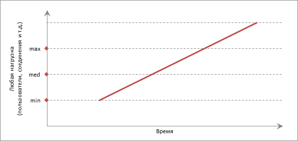
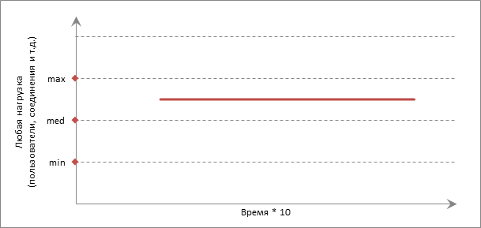
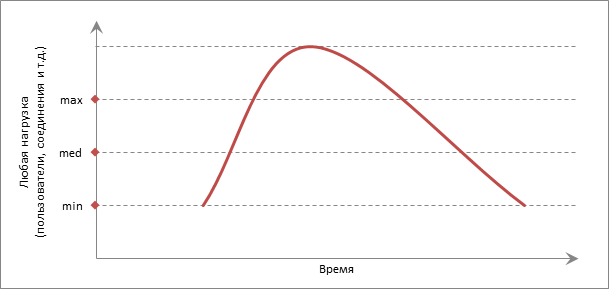
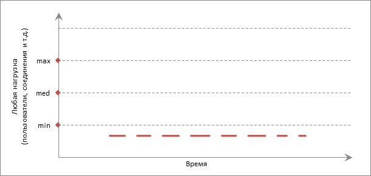

Виды тестирования производительности
Вячеслав Смирнов
owasp@yandex.ru
Что такое
тестирование производительности?
Тестирование производительности сегодня
Аналитики
- Удобство использования
- Понятность бизнес-процесса, запоминаемость
Проектировщики интерфейсов, frontend-разработчики
- Клиенсткая оптимизация, быстрая отрисовка
- Энергоэффективность
Администраторы, backend-разработчики
- Быстрые ответы сервера
- Эффективное использование оборудования
Тестирование производительности в курсе
- Быстрые ответы сервера
- Клиенсткая оптимизация
- Практика, изучение инструментов
Возможности инструментов для
тестирования производительности
Беспорядочная стрельба во все стороны
- с максимальной интенсивностью
- неизвестными запросами
- самописные утилиты «Бешеный пользователь»
- инструменты подачи нагрузки по access.log - httpperf
- быстрое выявление дефектов
- простота подготовки запросов
 © reputazzi.com
© reputazzi.com
Прицельная пулемётная очередь
- С заданным количеством повторений
- Одним или несколькими фиксированными запросами
- BASH-скриптом с curl/wget в цикле
- Утилитой Apache Benchmark (ab)
- На уровне TCP-протокола — tcpreplay
- Точечная нагрузка
- Лёгкость отправки статичных запросов
 © www.goodfon.ru
© www.goodfon.ru
Узконаправленная синтетическая нагрузка
- Для выявления лимитов оборудования
- Или пределов определённого сервиса
- Для сети и диска — iperf, fio
- Для всего оборудования — bonnie++
- Для сервисов — MySQL Sysbench Benchmark, pgbench
- Простота сравнения результатов
- Знание пределов оборудования и конфигурации
 © naked-science.ru
© naked-science.ru
Разнообразная и точная нагрузка
- В подходящее время
- В нужном месте
- С нужной силой
- анализом происходящего
- Apache.JMeter — простые сценарии на несколько запросов
- Gatling — сложные сценарии с дясятками запросов
- Yandex.Tank — автоматизация
- Сценарии, максимальная гибкость
- Нужно умение разрабатывать многопоточные приложения
 © www.goodfon.ru
© www.goodfon.ru
Инструмент подбирается под задачу
Виды
тестирования производительности
Видов тестирования много

Видов тестирования производительности пять

Производительность
количественная характеристика скорости выполнения операций
- количество операций
- в единицу времени
Нагрузочное тестирование (load testing)
выполнение программы с повышением нагрузки

Тестирование стабильности (stability testing)
длительное тестирование со средним уровнем нагрузки

Стрессовое тестирование (stress testing)
тестирование за пределами рабочих нагрузок, в ограниченных ресурсах

Объемное тестирование (volume testing)
тестирование при увеличении объемов данных

Масштабируемости (scalability testing)
измерения эффективности масштабирования